European fuse boxes
Traditional fuse boxes in Europe could vary considerably between countries; however the most common style, at least outside the UK, were the Diazed fuses created in the early 1900s in Germany. These used cartridge fuses held in a removable cap that could be unscrewed to change the fuse. Later on, the more compact Neozed fuses were introduced, which are still installed nowadays for some special applications.
In the UK, on the other hand, the most common style of fuseboxes by far were ones using rewireable fuses. These aren't currently in the collection, however rewireable fuses were also often found in some Italian fuse boxes.
The Diazed fuse system
This style of fuses, originally created in 1906 in Germany by Siemens, was the default in Europe, being used for more than half a century. In fact, parts and replacement fuses for existing boards can even be purchased today. A few different sizes of Diazed fuse exist - DII being by far the most common, with a maximum rating of 25A.
Just like the fuses used in North America, Diazed fuses use an Edison screw socket. However, in this case the fuse is a separate cartridge, which then is placed into a cap which is what actually screws into the E27 socket.
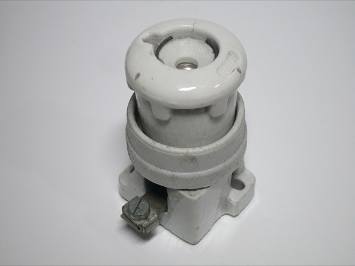 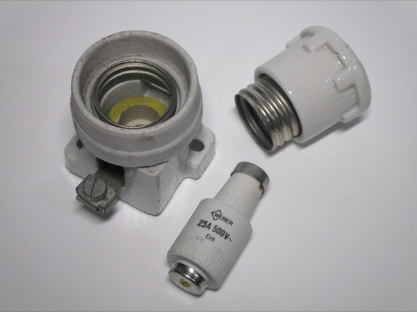 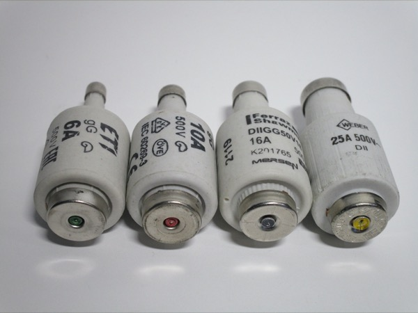{kind=link}
{kind=link}
{kind=link}
The fuse cartridges are shaped like a bottle, with the neck having a thicker diameter the higher its rated current is. On the other hand, fuse holders have a gauge ring (which can only be removed with a special tool) which prevents fuses of a higher current from being used.
Once the fuse is blown, a small spring-loaded button present at the end of the fuse pops out, and can be seen from the glass window present in the holder. The colour of the button depends on the rating of the fuse, and can also be seen on the gauge ring in the fuse base; the most common colours are red for 10A, grey for 16A and yellow for 25A.
Vintage replacement breaker by Siemens
This is a vintage replacement breaker meant to be used to replace Diazed fuses. New versions of these are still being manufactured and sold nowadays, however this is a very early model, manufactured by Siemens. The breaker features a reset button as well as a button to manually turn off the power, as well as some text with its rated trip current (6A).
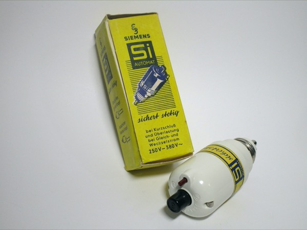 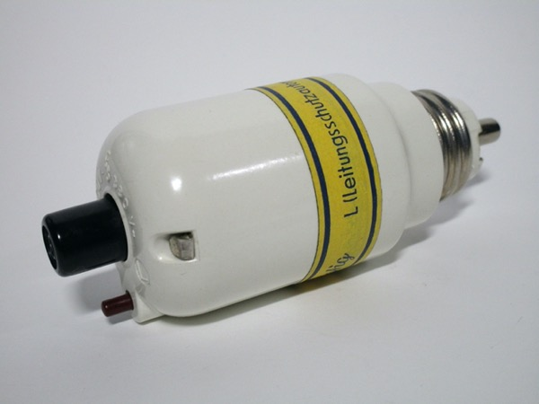 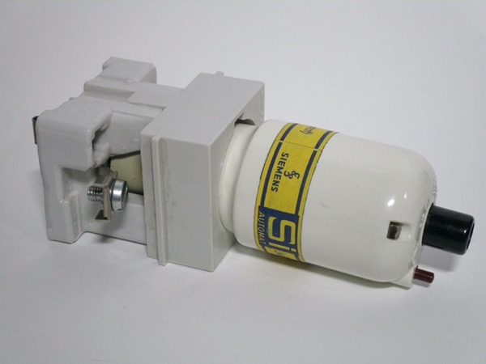{kind=link}
{kind=link}
{kind=link}
DIII three-phase fuse holder
This vintage fuse holder, by Italian manufacturer Cafrullo, is a three-phase model that accepts DIII fuses up to 63A. This means that, if used at its rated maximum, it could be used for a 43kW load! However, in the real world, this was likely not installed with fuses of that size.
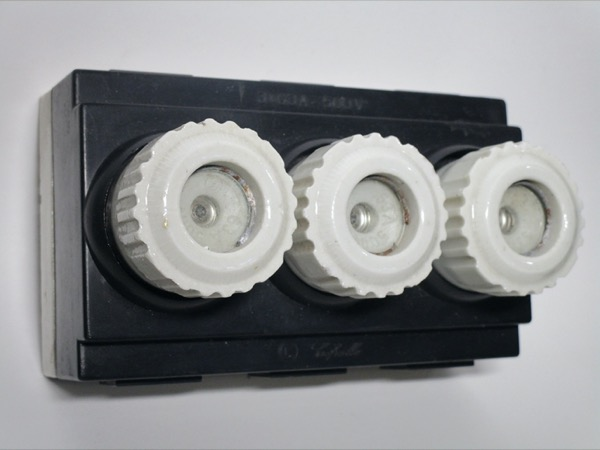 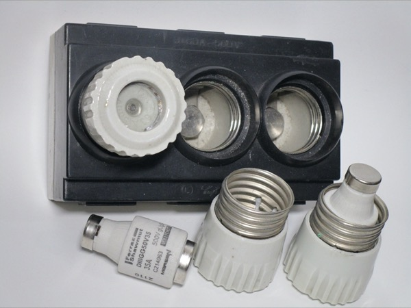 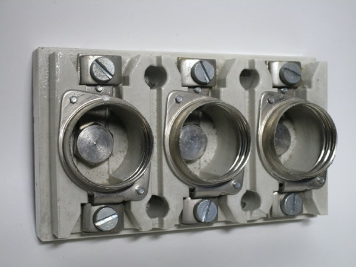{kind=link}
{kind=link}
{kind=link}
The use of Diazed fuses is a bit odd in Italy, where they weren't common at all; however, they were used for industrial applications, which is almost certainly the intended application for this one, especially given its maximum rating. Notably, this fuseholder doesn't have any sort of way to install a gauge ring - as such, it's possible to install fuses of any size in it. Perhaps it was assumed that this was less likely given the intended usecase.
Neozed fuses
The Neozed standard of fuses was designed as a replacement to the Diazed system, and, in some countries, slowly replaced it in newer installations, though the Diazed system continued to be very popular.
The most common fuse sizes are D01, for currents up to 16A, and D02, for currents up to 63A. D01 fuses use an E14 screw thread, while D02 ones use an E18 one. Using them is the same as in the Diazed sysem, with a screw cap which the fuse goes into.
While the use of Neozed fuses (especially the D01 ones) has become significantly less common for standard circuits, they're still found as main fuses for breaker panels in Germany and Austria.
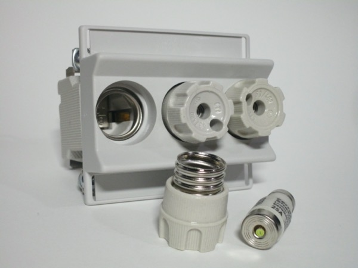 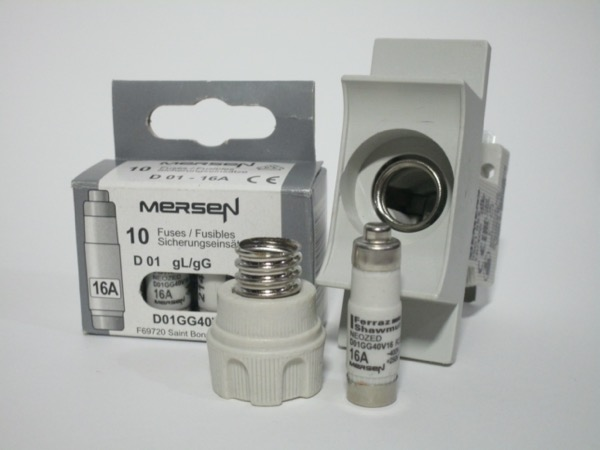 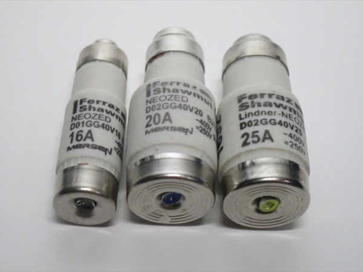{kind=link}
{kind=link}
{kind=link}
East German DL fuse holders
The DL system was a fuse standard specific to the GDR, created as a space-saving successor to the older Diazed
system, using the smaller E16 socket.
The design of these fuses is very similar to Neozed D01 ones, however the maximum rating is 20A instead of 16.
DL fuse cartridges are still being manufactured today for replacements, though unless you're replacing a 20A one
it makes sense just to buy Neozed fuses instead, as the two systems are so similar that D01 fuses up to 16A will
fit in DL holders.
{kind=link}
{kind=link}
{kind=link}
This bakelite fuse holder, built for the GDR market, is able to hold one DL fuse. Opening it up can be done easily, by removing the fuse and then removing the single screw holding the front cover on.
Wiring is also very simple, with screw terminals connecting to the line and load sides of the screw thread, as well as a small terminal block for the neutral connection (to which a small remnant of wire can be seen).
Early Busch-Jaeger breaker
This is a very early DIN-rail mountable circuit breaker, from German manufacturer Busch-Jaeger. Contrary to modern circuit breakers, which use a lever to turn the power on or off, this one uses pushbuttons, like the replacement breaker for Diazed fuse panels shown above.
The breaker came in a very colourful box, with a small instruction sheet detailing how to mount it to a DIN rail. Interestingly, it's 1.5 modules wide, compared to modern single-pole breakers which are generally all one module wide - this makes sense, given just how old this device is.
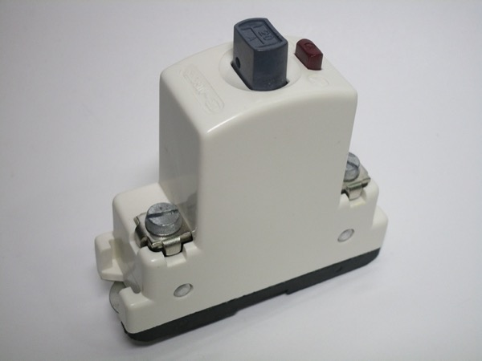 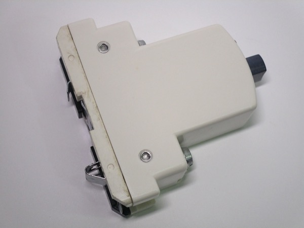 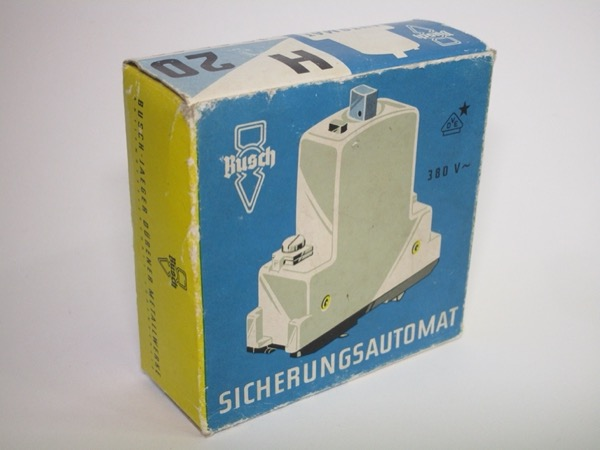{kind=link}
{kind=link}
{kind=link}